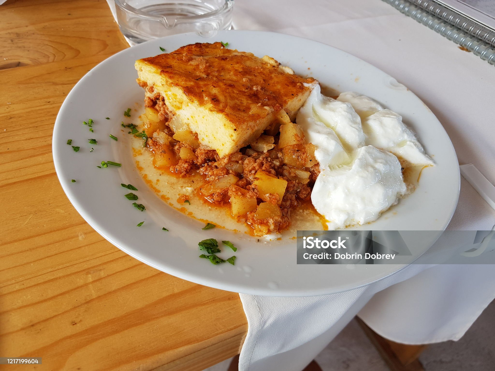

Moussaka

Moussaka- the perfect, balanced meal.
Moussaka has the perfect balance and enough carbs, proteins and fats to sustain you throughout the day. It is
also delicious. If you are craving something cheap and easy to make, that is also healthy, this is the perfect
meal for you!
Ingredients:
- 500g Potatoes
- 500g Mince
- 1/2 Head of Onion
- Can of Tomatoes
- 2 tbsp Paprika
- A pinch of Salt and Pepper
Topping Ingredients:
- 2 Eggs
- 2 Cups of Yoghurt
- 1/4 Cup all-purpose Flour
- 1 tbsp Baking Soda
Steps
- Peel and chop the Potatoes and the Onion
- Pre-heat the oven to 200 C
- Fry the mince until brown
- Add the mince, poratoes, onion and tomatoes into a baking tray and mix with the paprika, salt
and pepper
- Put into the oven for around 30-40 minutes, until the vegetables soften
- Take the dish out and mix the eggs, yoghur, flour and soda together in a bowl until it turns into a
spreadable mixture. Pour over
the dish
- Return baking dish to the oven and cook until the top is golden brown, about 15 more minutes
- Enjoy!
Click here for more recipes!